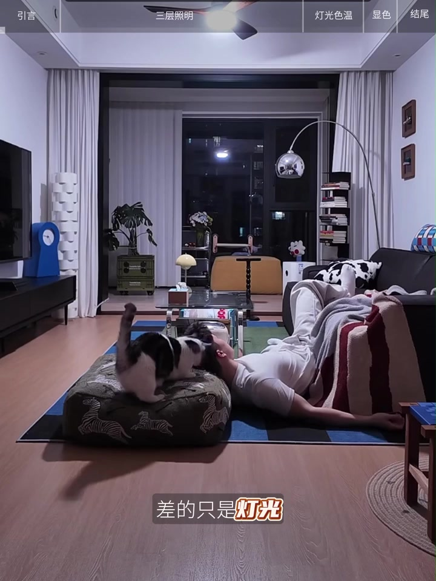
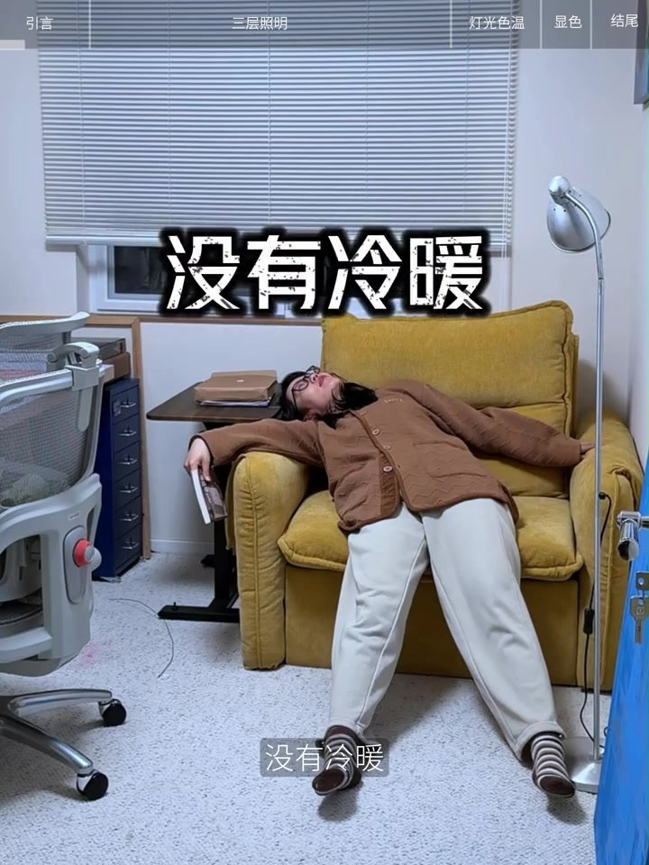
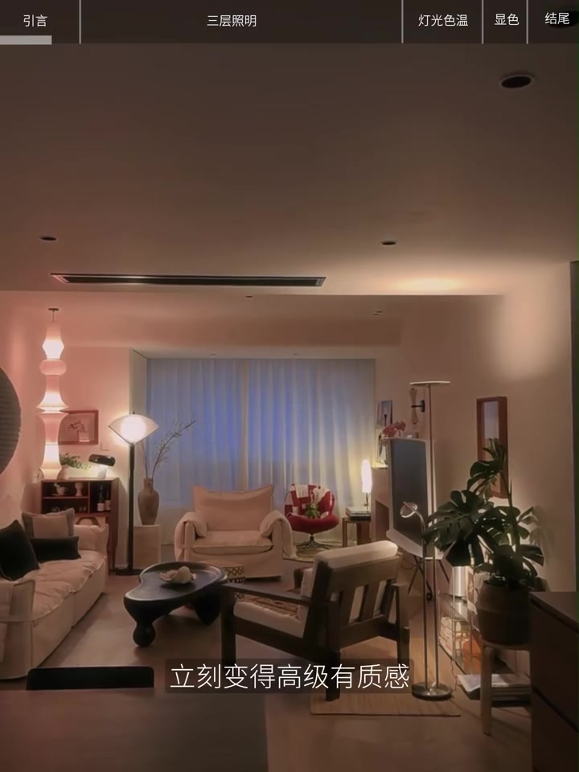
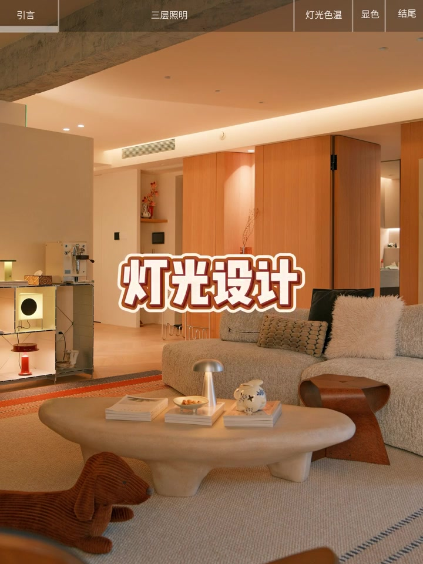
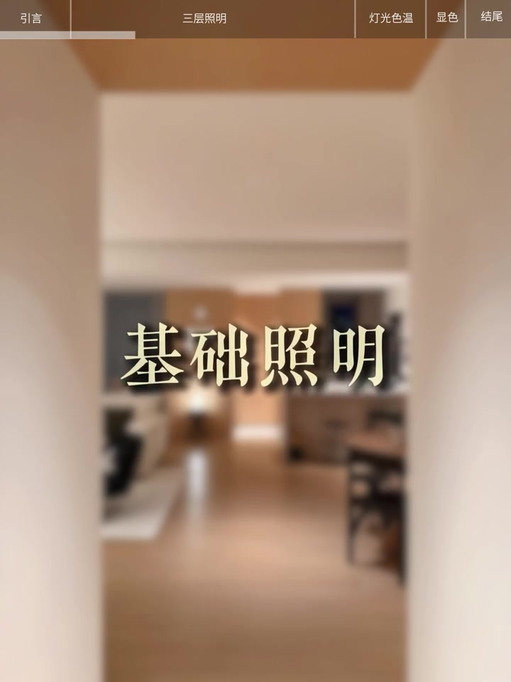
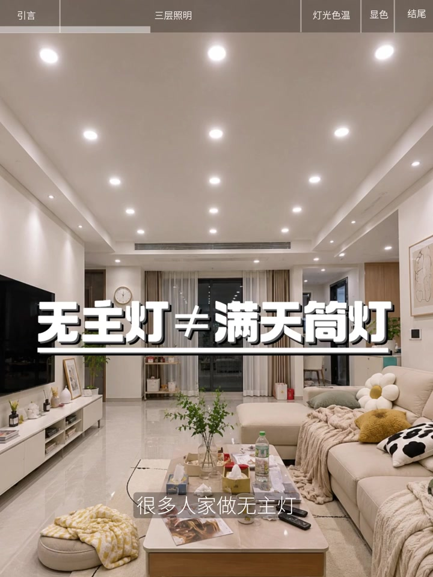
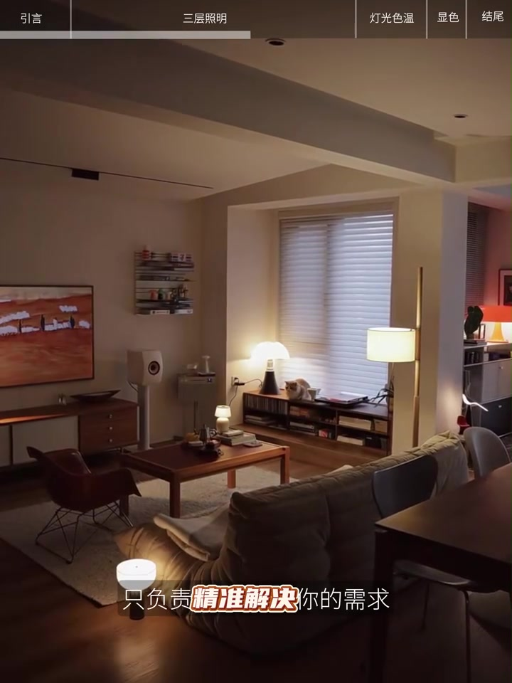
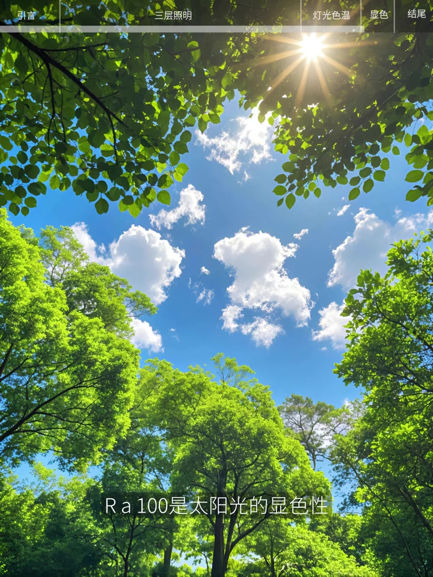

同样的房子，差的只是灯光
视频先用同一套住宅做前后对照：一开灯屋子全亮，但光线没有强弱、冷暖与重点，质感被均匀白光盖平，空间像一张白纸；换掉照明方式后，同样空间立刻显得高级、有层次。
画面字幕：「差的只是灯光」
说明：Whisper 把「差」识成「插」、把「轻风格」识成「清风格」等。下文叙述依据可见字幕与家装语境校正；页面末尾仍完整保留全部 Whisper 分段。



为什么买了灯具做无主灯，还是像出租屋
作者自我介绍后直接抛问题：很多人花不少钱买灯具、做无主灯，装出来仍像出租屋——因为从一开始就搞错了灯光照明的本质。尤其是轻风格，没有复杂造型和装饰，灯光就是空间的灵魂；不是一盏主灯就能搞定，而要分三个层次，缺了哪一层质感都出不来。
「尤其是轻风格……灯光就是空间的灵魂。」（口播立场）

第一层：基础照明只是空间底色
首先是基础照明：可以用有主灯，也可以用无主灯。它只是空间底色——能看清地面和家具、让人自由走动即可，不是把整屋点亮得像办公室。

无主灯不等于满天筒灯
视频用画面点破常见误区：很多人家做无主灯，却装了十几盏筒灯，一开全亮，不仅晃眼还费电——完全没有必要。字幕直接写「无主灯 ≠ 满天筒灯」。
画面字幕：「无主灯 ≠ 满天筒灯」

第二层：功能照明，哪里需要就照哪里
接着进入功能照明。作者用日常场景提问：沙发旁看书光线不够、厨房切菜被自己影子挡住、餐厅吃饭菜色发灰没食欲——这都不是主灯的锅，而是缺了功能照明。它不负责照亮整个空间，只负责精准解决需求：沙发旁落地灯、厨房吊柜下灯带、餐厅吊灯打亮餐桌。
画面字幕强调：「只负责精准解决你的需求」

第三层：氛围照明才是轻风格高级感核心
很多人觉得可有可无的氛围照明，作者认为才是轻风格高级感的核心。重点用中低点位的光：墙角落地灯、床头小台灯、墙面壁灯、柜体内嵌灯。点位越低光线越柔和，照在墙面和地面形成自然光影，不像头顶射灯那样有压迫感，更像茶室和咖啡店的放松氛围。
画面字幕：「其实才是轻风格」
两个容易被忽略的细节：色温与显色性
三层讲完后，作者补两个直接影响灯光质感的细节。第一是色温：不同色温带来不同精神状态，像一天中太阳色温变化；有时要打起精神，有时要慵懒放松。有条件就选可调色温，一成不变的色温适配不了多变生活需求。
第二是显色性：画面写明「Ra 100 是太阳光的显色性」；高显色性光源通常要求 Ra≥95，能更好还原事物本来颜色，带来更好生活体验。

收束：基础光打亮，功能光解题，氛围光调情绪
结尾口诀很短：用基础光打亮空间，功能光解决问题，氛围光调出情绪。不用追求复杂设计，把钱花在这些看不见的细节上，住进去才知道有多舒服。作者以「让家好用又好看」作结。
「用基础光打亮空间，功能光解决问题，氛围光调出情绪。」